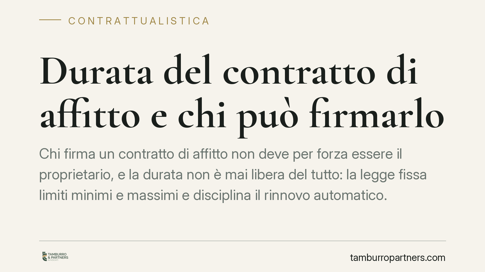

Durata del contratto di affitto e chi può firmarlo
Chi firma un contratto di affitto non deve per forza essere il proprietario, e la durata non è mai libera del tutto: la legge fissa limiti minimi e massimi e disciplina il rinnovo automatico. Capire queste regole prima di sottoscrivere evita contenziosi su recesso, disdetta e legittimazione delle parti.

Il quadro di partenza
La locazione è il contratto con cui una parte (il locatore) concede a un'altra (il conduttore) il godimento di un bene per un tempo determinato, dietro pagamento di un corrispettivo. Lo dice l'art. 1571 del Codice civile.
Due sono le domande che ricorrono più spesso: quanto può durare un affitto e chi ha titolo per firmarlo. Le risposte non coincidono con il senso comune.
Inquadramento normativo
Sulla durata, il riferimento generale è l'art. 1573 c.c.: la locazione non può stipularsi per un tempo superiore a trent'anni. Se le parti pattuiscono un termine più lungo, o addirittura a tempo indeterminato senza limite, il contratto si riduce automaticamente a trent'anni. È un limite di ordine pubblico, pensato per evitare vincoli perpetui sul bene.
Attenzione però: per gli immobili urbani a uso abitativo e commerciale vale la disciplina speciale della legge 431/1998 e della legge 392/1978 (equo canone), che impone durate minime tipizzate. Per l'abitativo "ordinario" il modello è il 4+4 (quattro anni più quattro di rinnovo); per il canone concordato il 3+2. Non si tratta quindi di durata liberamente contrattabile: il minimo è inderogabile a tutela del conduttore.
Sul rinnovo tacito interviene l'art. 1597 c.c. Se alla scadenza il conduttore resta nel godimento del bene e il locatore non si oppone, la locazione si intende rinnovata. Nelle locazioni immobiliari, la disciplina speciale prevede il rinnovo automatico salvo disdetta comunicata nei termini e nelle forme di legge (generalmente sei mesi prima della scadenza, tramite raccomandata o PEC).
Chi può firmare
Qui sta il punto meno intuitivo: firmare un affitto non richiede di essere proprietari. La legittimazione a concedere in locazione spetta a chi ha il diritto di godimento sul bene, non necessariamente il titolare della piena proprietà.
Può dunque locare validamente:
- l'usufruttuario, che ha per definizione il diritto di godere del bene e di trarne i frutti, incluso il canone;
- il nudo proprietario, con i limiti derivanti dal diritto dell'usufruttuario, se l'usufrutto è già costituito;
- il comproprietario, ma con un vincolo importante: la locazione di un bene comune rientra tra gli atti di amministrazione e richiede il consenso della maggioranza dei partecipanti calcolata per quote. Un solo comproprietario, in linea di massima, non può locare l'intero bene senza il consenso degli altri;
- in alcuni casi il promissario acquirente immesso nel possesso, sebbene la sua posizione vada valutata con prudenza perché la proprietà non è ancora trasferita.
La Cassazione civile ha più volte chiarito che il contratto stipulato da chi non ha titolo pieno non è per ciò solo nullo, ma pone problemi di opponibilità e di rapporti tra le parti. Il conduttore in buona fede resta comunque tutelato, ma può trovarsi esposto a contestazioni.
Implicazioni pratiche
Per il conduttore, firmare senza verificare la legittimazione del locatore significa esporsi al rischio che il contratto venga contestato dagli altri titolari del diritto, con possibili richieste di rilascio. Per il locatore, disciplinare male durata e disdetta significa restare vincolato oltre le proprie intenzioni o, all'opposto, vedersi negata la restituzione del bene.
Il caso più delicato resta quello del bene in comproprietà o gravato da usufrutto: la firma del singolo può non bastare.
Cosa fare in concreto
- Verificate il titolo di chi firma: chiedete la visura catastale e, se necessario, l'atto di provenienza, per accertare proprietà, usufrutto o quote di comproprietà.
- Controllate che tutti i legittimati abbiano prestato consenso quando il bene è in comproprietà o soggetto a usufrutto.
- Fissate durata e rinnovo con chiarezza, rispettando i minimi inderogabili della disciplina di settore e i limiti dell'art. 1573 c.c.
- Gestite la disdetta nelle forme corrette: rispettate termini e modalità di comunicazione per evitare rinnovi automatici indesiderati ex art. 1597 c.c.
- Fate valutare il contratto prima della firma quando la situazione proprietaria è complessa o il canone è rilevante.
Disclaimer
Contributo informativo a cura di Tamburro & Partners - Avv. Giuseppe Tamburro. Non costituisce parere legale.
Ogni contratto ha il suo equilibrio.
Se vuoi una revisione delle clausole o una redazione su misura, scrivi allo studio. Ti rispondiamo entro un giorno lavorativo.